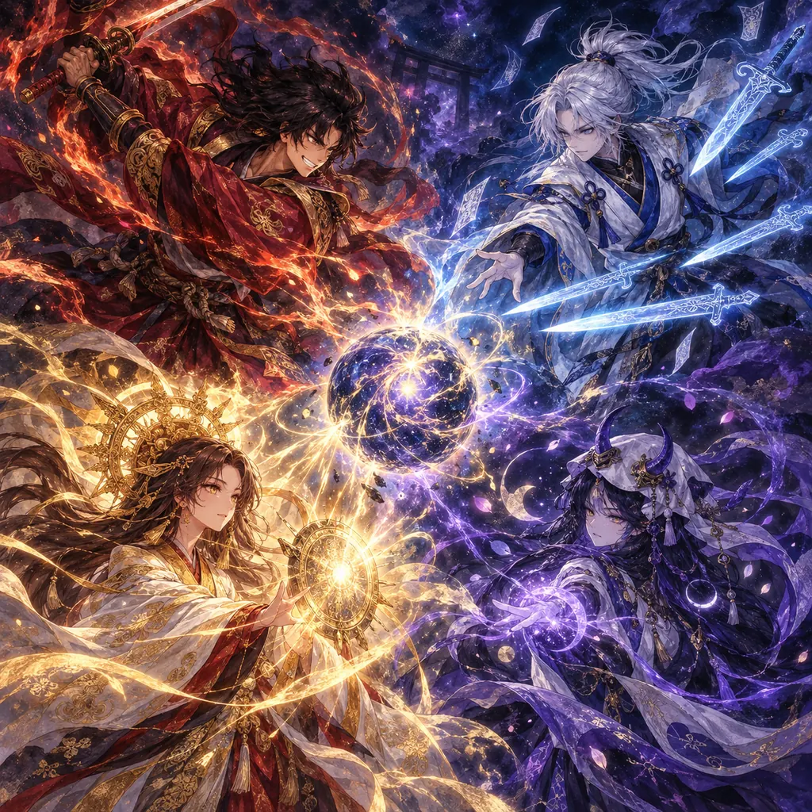
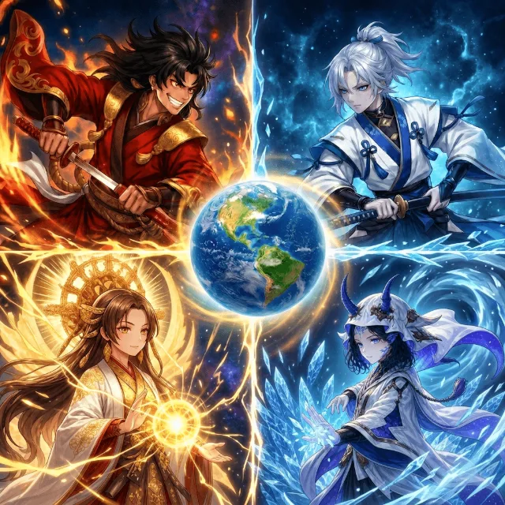
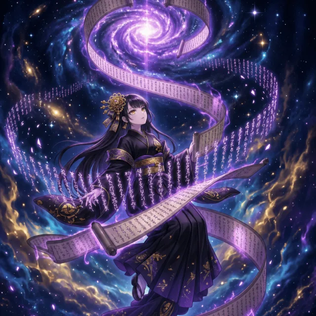
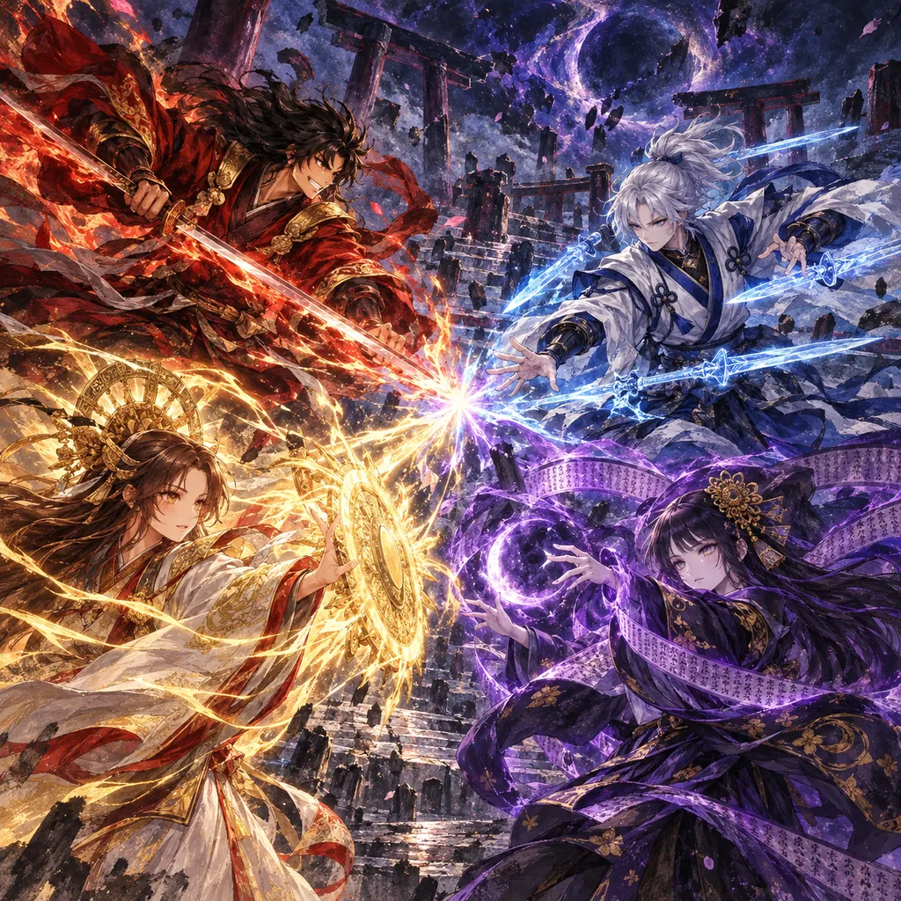
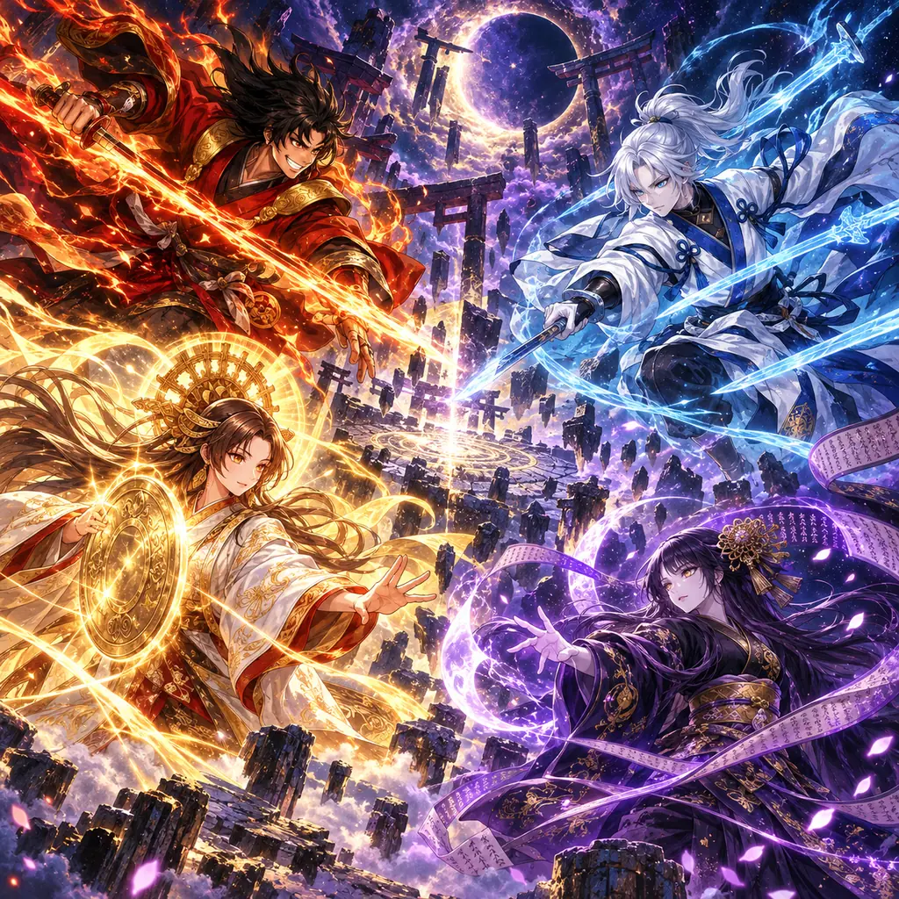
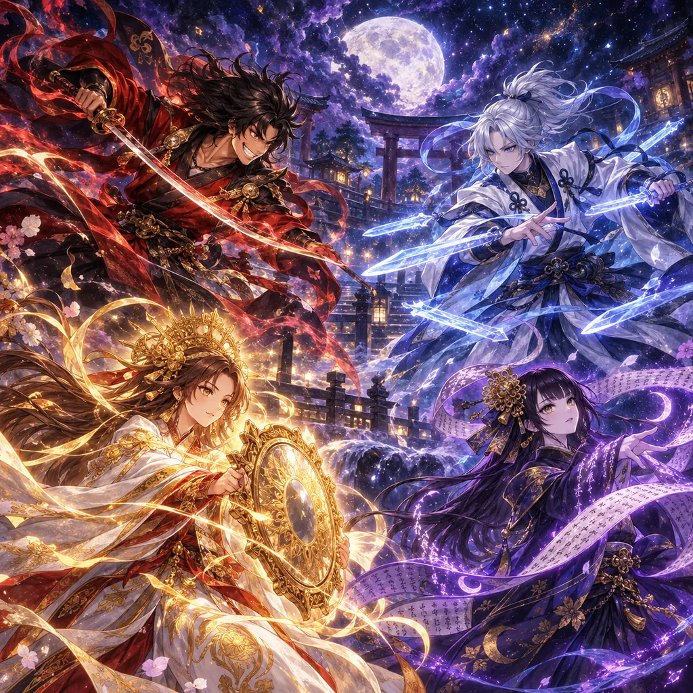

候補1：星の核
中央の星の核を囲む構図。元の画像に近い4人の見せ方です。
メニュー表示に近い縮小サイズ
4案とも登場するカミはスサノオ、ヤマトタケル、アマテラス、ツクヨミの4人だけです。全員が臨戦態勢になるよう描き、主にカードリストの画風に合わせて調整しました。ゲーム画面の画像は、採用案が決まるまで変更していません。



中央の星の核を囲む構図。元の画像に近い4人の見せ方です。

4人の視線と力が中心でぶつかる、筆致の強い案です。

4人の動きと背景の奥行きを強めた案です。

カードリストの星空と柔らかな発光を特に意識した案です。